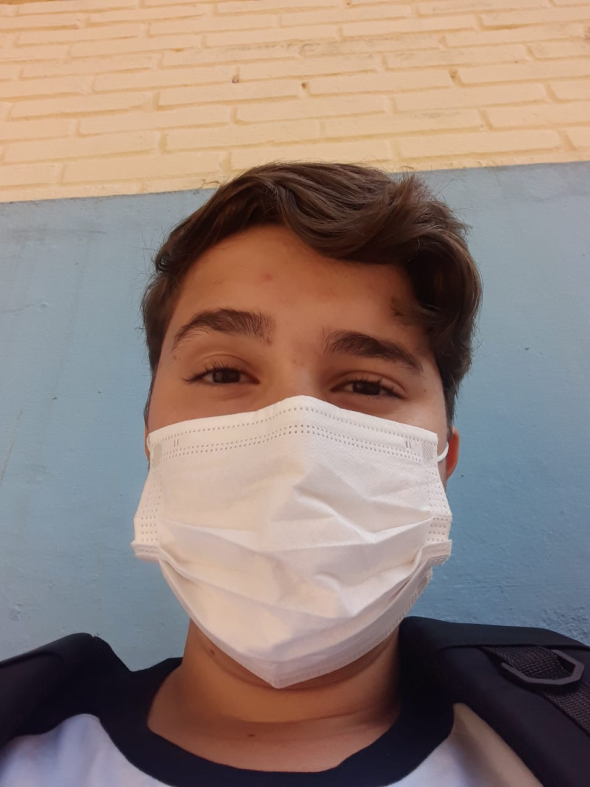
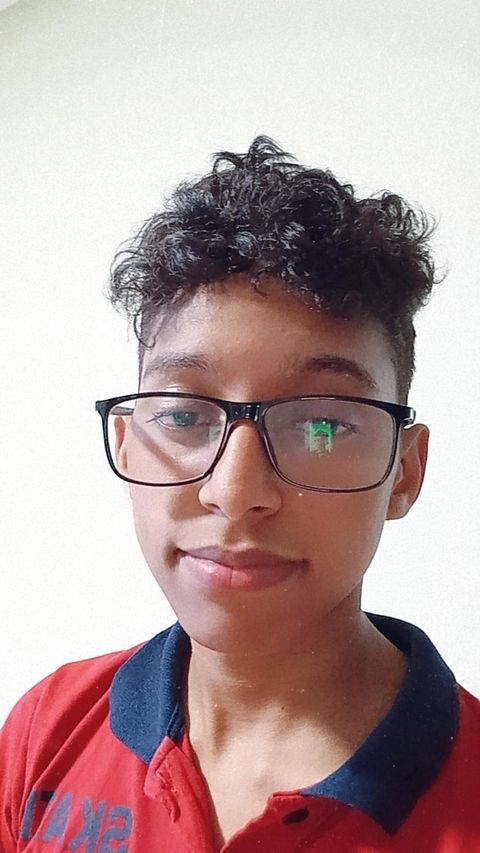

Professora Cíntia Pinho de I.W e P.A, responsável de monitorar e auxiliar na parte produtiva do site "Contos Medonhos", também na ajuda do Designer do site.
Professora...
Bárbara Tomazia Alexandre do Nascimento
Professora Bárbara de Português, responsável de ajudar nos textos dos contos, erros ortográficos, erros em gerais, para não ter nenhuma falha.
Sobre o Projeto...
Alunos
Projeto em desenvolvimento pelos Alunos Lucas Rafael Avelino Marinho estudante de informática da Etec Maria Cristina Medeiros, 15 anos, se interessa muito por programação no geral e gosta de fazer tudo. Marcos Dias Conceição, estudante de informática da Etec Maria Cristina Medeiros, 15 anos, se interessa por programação no geral, mas não tem uma função estabelecida.
Projeto
Contos de fatos reais, contado por nossas Famílias e que já ouviram sobre o caso e que já aconteceu com algum parente ou colega. Projeto feito com muito carinho e dedicação dos Alunos. Projeto em desenvolvimentos desde o dia 23/09/2021 e foi encerrado no dia 28/09/2021
Tenha
Uma boa
Leitura!
Desenvolvedores
Desenvolvedores do Site "Contos Medonhos"

Lucas Rafael
Designer

Marcos Dias
Designer
Somos alunos da Etec MCM, da parte de Tecnologia da Informação (T.I) e estamos desevolvendo um Site sobre contos de fatos reais, espero que goste!
Entre em contato conosco
Tire sua duvida conosco.
Respiração Profunda
Uma respiração no canto da sala...
Uma vez minha tia estava vindo da maternidade com a neném, eu, minha vó e minha prima fomos fazer faxina antes dela chegar em casa, não sei o motivo, mais eu falei que ia ir na minha casa, minha vó pediu um cigarro que fica na casa dela, que fica no quintal da minha casa, só que ela usava uma casa que tinha do lado da sua antiga casa, para guardar coisas que não usava, nisso ela escondeu a chave na sala, então quando eu entrei na sala pra pegar a chave e ir abrir a porta dela, mais de repente eu ouvi uma respiração de alguém no canto da sala, eu cheguei mais perto para ver se não tinha ninguém brincando comigo, quanto mais perto, a respiração ficava mais forte, e não tinha ninguém lá, nem no quintal, somente EU, peguei e sai correndo. Chegando na casa da minha tia, fui falar com a minha vó, e ela disse que já sabia, já tinha acontecido com ela e que uma tia minha também já tinha falado sobre isso com ela.
s
O Espelho
Batidas estranhas em meu espelho...
Cheguei em casa depois de um longo dia no trabalho, estava cansado, apenas passei pela sala e fui para o banheiro. Tirei a roupa e liguei o chuveiro, mas mesmo assim podia ouvir aquelas batidas no vidro. Você sabe, você não estranha as batidas no vidro. Você sabe, você não estranha batidas no vidro da sua casa, mas quando se mora no terceiro andar, você começa a achar estranho sim.
Quando saio do banho elas cessaram.
Acordo e olho no relógio, são 3h14 da manhã, e aquelas mesmas batidas ecoam pelo apartamento, não sei de onde eles vêm. Volto a dormir.
Chego em casa as 23h00 de sexta, só quero ir para minha cama, a happy hour com os amigos foi ótima.
Saio do chuveiro e vou para a cama, ligo a TV, o que dá certa claridade para o quarto todo.
As batidas começam.
Cansado de tudo aquilo, dou um pulo da cama e saio em direção a todas as janelas do apartamento. Não acho nada.
Volto para a cama, me deito e percebo que elas pararam.
Elas voltam.
Foi só nesse momento que percebi que as batidas vinham do lugar que eu não olhei.
O espelho.
O Túnel das Almas
Almas acorrentadas...
Eu tinha acabado de começar em um novo emprego, era do outro lado da cidade.
Tinha um longo trajeto todo dia até o trabalho.
Certa noite fiquei até mais tarde no escritório.
Sai tarde da noite rua a fora com meu carro, não se via mais ninguém pelas ruas.
Até que cheguei no túnel das almas.
Era chamado assim pois haviam várias lendas em relaçao a esse túnel.
E uma dela era de um Homem, um antigo assasino, havia morrido dentro daquele túnel em uma perseguição policial, e desde estão, perseguia a todos que passasem pelo túnel na parte da noite.
Eu não era de acreditar nessas coisas, então, so continuei o caminho.
O túnel era grande.
Confesso que na metade do caminho, um frio tomou conta do meu corpo.
Olhei pelo espelho do retrovisor e ai sim um frio me correu a espinha.
Havia um carro atrás de mim.
Preto, com janelas escurecidas, e vindo em minha direção rm grande velocidade.
Ele não estava lá antes.
Pisei no acelerador sem olhar para trás, até aquele momento.
Quando não havia mais sinal do carro preto, olhei para trás e respirei aliviado.
Quando olhei de volta, bati em uma mureta de proteção e meu corpo foi arremessado para fora do veículo.
Agora, eu sou uma das almas que habitam o túnel das almas
O Trem Fantasmaa
Vultos e Gemidos...
Em algumas das lendas incluem o “trem-fantasma”! Moradores e até antigos trabalhadores da ferrovia contam que, à noite, dá para ouvir sons e sentir um “deslocamento de ar” em alguns túneis, causados pelas “almas” de trabalhadores e envolvidos em acidentes de trens ocorridos em Paranapiacaba na construção da ferrovia.
Alguns relatam que ouvem os gemidos dos funcionários que morreram durante a construção da ferrovia, vultos e que sempre havia um trecho onde as máquinas teimavam em “quebrar” ou parar sozinhas.
Hoje esse trecho é particular e tem seu acesso proibido.
Bruxas não Existem
Bruxas Existem...
Quando eu era garoto, acreditava em bruxas, mulheres malvadas que passavam o tempo todo maquinando coisas perversas. Os meus amigos também acreditavam nisso. A prova para nós era uma mulher muito velha, uma solteirona que morava numa casinha caindo aos pedaços no fim de nossa rua. Seu nome era Ana Custódio, mas nós só a chamávamos de "bruxa".
Era muito feia, ela; gorda, enorme, os cabelos pareciam palha, o nariz era comprido, ela tinha uma enorme verruga no queixo. E estava sempre falando sozinha. Nunca tínhamos entrado na casa, mas tínhamos a certeza de que, se fizéssemos isso, nós a encontraríamos preparando venenos num grande caldeirão.
Nossa diversão predileta era incomodá-la. Volta e meia invadíamos o pequeno pátio para dali roubar frutas e quando, por acaso, a velha saía à rua para fazer compras no pequeno armazém ali perto, corríamos atrás dela gritando "bruxa, bruxa!".
Um dia encontramos, no meio da rua, um bode morto. A quem pertencera esse animal nós não sabíamos, mas logo descobrimos o que fazer com ele: jogá-lo na casa da bruxa. O que seria fácil. Ao contrário do que sempre acontecia, naquela manhã, e talvez por esquecimento, ela deixara aberta a janela da frente. Sob comando do João Pedro, que era o nosso líder, levantamos o bicho, que era grande e pesava bastante, e com muito esforço nós o levamos até a janela. Tentamos empurrá-lo para dentro, mas aí os chifres ficaram presos na cortina.
- Vamos logo - gritava o João Pedro -, antes que a bruxa apareça. E ela apareceu. No momento exato em que, finalmente, conseguíamos introduzir o bode pela janela, a porta se abriu e ali estava ela, a bruxa, empunhando um cabo de vassoura. Rindo, saímos correndo. Eu, gordinho, era o último.
E então aconteceu. De repente, enfiei o pé num buraco e caí. De imediato senti uma dor terrível na perna e não tive dúvida: estava quebrada. Gemendo, tentei me levantar, mas não consegui. E a bruxa, caminhando com dificuldade, mas com o cabo de vassoura na mão, aproximava-se. Àquela altura a turma estava longe, ninguém poderia me ajudar. E a mulher sem dúvida descarregaria em mim sua fúria.
Em um momento, ela estava junto a mim, transtornada de raiva. Mas aí viu a minha perna, e instantaneamente mudou. Agachou-se junto a mim e começou a examiná-la com uma habilidade surpreendente.
- Está quebrada - disse por fim. - Mas podemos dar um jeito. Não se preocupe, sei fazer isso. Fui enfermeira muitos anos, trabalhei em hospital. Confie em mim.
Dividiu o cabo de vassoura em três pedaços e com eles, e com seu cinto de pano, improvisou uma tala, imobilizando-me a perna. A dor diminuiu muito e, amparado nela, fui até minha casa. "Chame uma ambulância", disse a mulher à minha mãe. Sorriu.
Tudo ficou bem. Levaram-me para o hospital, o médico engessou minha perna e em poucas semanas eu estava recuperado. Desde então, deixei de acreditar em bruxas. E tornei-me grande amigo de uma senhora que morava em minha rua, uma senhora muito boa que se chamava Ana Custódio.
O Vigia Noturno
Nunca ouve um vigia substituto...
Antigos moradores comentam sobre um vigia noturno encarregado de verificar casa por casa com três batidas na porta. Se estivesse tudo bem era só responder com três batidas na mesma porta e o vigia iria embora seguindo com seu trabalho. Caso contrário o vigia poderia entrar em sua casa para saber se está tudo bem.
Numa noite escura e de densa neblina, nenhum dos moradores ouviu as três batidas. E no amanhecer descobrem que o vigia noturno fora assassinado sem explicação ou pistas aparentes.
Reza que um dia depois de sua morte, todos os moradores ouviram as três batidas e como de costume, responderam com três batidas a porta para confirmar que estavam bem. Achando que o vigia noturno fora substituído.
O que até hoje deixam os moradores intrigados?
Nunca ouve um vigia substituto!!